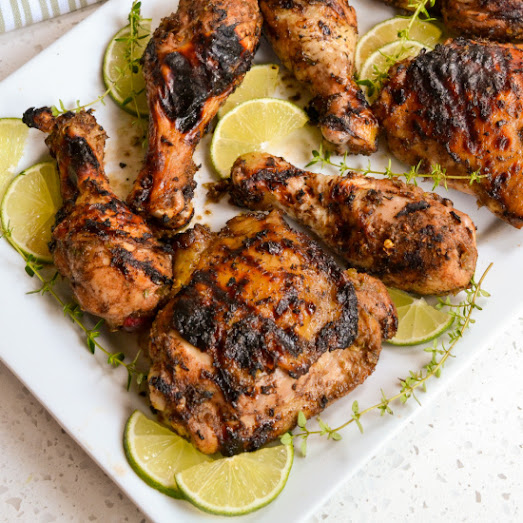

A Jerky Chicken

A great Jamaican style dish.
A spicy blend of herbs, vinegar, and a habanero pepper make this chicken dish unforgettable.
Serve with rice, yum!
Ingredients
- 1 teaspoon onion, finely chopped
- 3 tablespoons brown sugar
- 4 tablespoons soy sauce
- 4 tablespoons red wine vinegar
- 2 teaspoons chopped fresh thyme
- 1 teaspoon sesame oil
- 3 cloves garlic, chopped
- ½ teaspoon ground allspice
- 1 habanero pepper, sliced
- 4 skinless, boneless chicken breast halves - cut into 1 inch strips
- Combine the onion, brown sugar, soy sauce, vinegar, thyme, sesame oil, garlic, allspice and habanero pepper
in the container of a food processor or blender. Process until smooth. Place the chicken into a large
resealable bag, and pour in 3/4 of the sauce. Squeeze out excess air, and seal. Marinate in the refrigerator
for at least one hour.
- Preheat your oven's broiler.
- Remove chicken from bag, and discard marinade. Broil chicken for 10 to 15 minutes, turning once to ensure
even cooking. Heat remaining sauce in a small pan, and pour over chicken when serving.